Frost dates and planting calendar
La Grande, OR
The typical last spring frost in La Grande is May 6, and the first fall frost is around October 1. Plant peas from Apr 1; plant tomatoes from May 20.
NOAA 1991–2020 frost normals, La Grande station. Where these dates come from
Chance of frost through the year
Frost over in 9 years out of 10: after May 26
Tomatoes go out May 20 – Jun 17, under frost cover at first
- Very likely
- Likely
- Possible
- Unlikely
In 9 years out of 10, the last spring frost has passed by May 26 and the first fall frost holds off until Sep 17.
What to plant now
Turn on JavaScript to see what's in season today. The full calendar is below.
Make a garden plan for La Grande Pick your plants and get a dated, printable to-do list.
Inland Northwest. Spokane, Ellensburg, the Okanogan, La Grande, north Idaho, the Magic Valley, eastern Idaho and other higher, colder interior valleys. Cold springs and an earlier fall mean a shorter season; quick-maturing varieties pay off.
Gardening in the Columbia Gorge and eastern Oregon. Summers are hot and dry, so plan on irrigation. In the Columbia Gorge, steady wind dries plants out quickly, so stake tall crops and use windbreaks; the higher valleys around La Grande, Baker City and Joseph have shorter seasons.
How the season in La Grande compares
With 148 frost-free days, La Grande has the 68th-longest season of the 86 Oregon, Washington and Idaho towns we cover. They run from 72 days in McCall to 330 days in Brookings and Gold Beach.
The typical last frost here, May 6, is in the middle of the towns we cover in the Columbia Gorge and eastern Oregon: 25 days later than The Dalles and 22 days earlier than John Day.
The gap between the typical last frost and the date it's over in 9 years out of 10 is 20 days, about average for the towns on this site. Frost after the typical date still happens about half the time, so plan on covering warm crops until May 26.
The season is long enough for every warm crop on our list, even pumpkins and sweet potatoes, to finish from a normal planting date.
For a fall and winter garden, sow carrots by July 23 and set out kale plants by August 6. Fall crops here are timed to the first frost (October 1 on average) and to shortening days.
Planting calendar
Pick a group to see when each plant goes in, or search for one.
Salad greens 7 plants
- SpinachPlant seeds in the ground
- Plant Apr 1 – May 6
- Again for fall Aug 6–27
- LettucePlant seeds or young plants
- Indoors Feb 18 – Mar 4
- Plant Apr 1 – May 27
- Again for fall Aug 6–20
- Swiss chardPlant seeds in the ground
- Plant Apr 15 – Jun 10
- Again for fall Jul 23 – Aug 6
- ArugulaPlant seeds in the ground
- Plant Apr 1 – May 13
- Again for fall Aug 13 – Sep 3
- CeleryPlant young plants (starts)
- Indoors Mar 11–25
- Plant May 20 – Jun 24
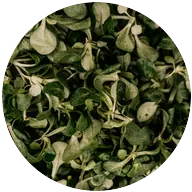
MâchePlant seeds in the ground- Plant Apr 1 – May 6
- Again for fall Jul 30 – Sep 3
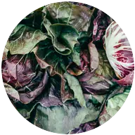
RadicchioPlant seeds or young plants- Indoors Mar 4–18
- Plant Apr 15 – May 20
- Again for fall Jun 25 – Jul 16
Cabbage family 9 plants
- KalePlant young plants (starts)
- Indoors Mar 4–18
- Plant Apr 15 – May 27
- Again for fall Jul 23 – Aug 6
- BroccoliPlant young plants (starts)
- Indoors Feb 25 – Mar 11
- Plant Apr 15 – May 20
- Again for fall Jul 9–23
- CabbagePlant young plants (starts)
- Indoors Feb 25 – Mar 11
- Plant Apr 15 – May 20
- Again for fall Jul 9–23
- CauliflowerPlant young plants (starts)
- Indoors Feb 25 – Mar 11
- Plant Apr 15 – May 13
- Again for fall Jul 2–16
- Brussels sproutsPlant young plants (starts)
- Indoors Feb 18 – Mar 4
- Plant Apr 15 – May 27
- Bok choyPlant seeds or young plants
- Indoors Feb 25 – Mar 11
- Plant Apr 1 – May 6
- Again for fall Aug 6–20
- KohlrabiPlant seeds or young plants
- Indoors Mar 4–18
- Plant Apr 15 – May 27
- Again for fall Jul 30 – Aug 13
- CollardsPlant young plants (starts)
- Indoors Mar 4–18
- Plant Apr 15 – May 27
- Again for fall Jul 23 – Aug 6
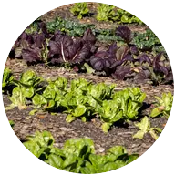
Mustard greensPlant seeds in the ground- Plant Apr 1 – May 13
- Again for fall Aug 6–27
Root vegetables 7 plants
- RadishesPlant seeds in the ground
- Plant Apr 1 – May 27
- Again for fall Aug 20 – Sep 3
- CarrotsPlant seeds in the ground
- Plant Apr 15 – Jun 10
- Again for fall Jul 9–23
- BeetsPlant seeds in the ground
- Plant Apr 15 – Jun 10
- Again for fall Jul 23 – Aug 6
- PotatoesPlant seed potatoes
- Plant Apr 15 – May 27
- TurnipsPlant seeds in the ground
- Plant Apr 1 – May 13
- Again for fall Jul 30 – Aug 13
- ParsnipsPlant seeds in the ground
- Plant Apr 15 – May 27
- Sweet potatoesPlant rooted cuttings (slips)
- Plant May 30 – Jun 20
Onion family 4 plants
Peas and beans 4 plants
- PeasPlant seeds in the ground
- Plant Apr 1 – May 13
- Bush beansPlant seeds in the ground
- Plant May 15 – Jun 26
Frost possible until about May 26: keep frost cover handy.
- Pole beansPlant seeds in the ground
- Plant May 15 – Jun 19
Frost possible until about May 26: keep frost cover handy.
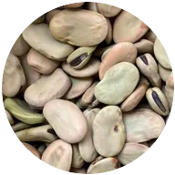
Fava beansPlant seeds in the ground- Plant Apr 1 – May 6
Tomatoes and summer crops 6 plants
- Sweet cornPlant seeds in the ground
- Plant May 15 – Jun 19
Frost possible until about May 26: keep frost cover handy.
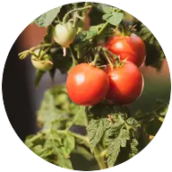
TomatoesPlant young plants (starts)- Indoors Mar 25 – Apr 8
- Plant May 20 – Jun 17
Frost possible until about May 26: keep frost cover handy.
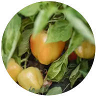
PeppersPlant young plants (starts)- Indoors Mar 21 – Apr 4
- Plant May 30 – Jun 20
- EggplantPlant young plants (starts)
- Indoors Mar 21 – Apr 4
- Plant May 30 – Jun 20
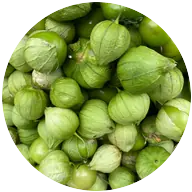
TomatillosPlant young plants (starts)- Indoors Mar 25 – Apr 8
- Plant May 20 – Jun 17
Frost possible until about May 26: keep frost cover handy.
- Ground cherriesPlant young plants (starts)
- Indoors Apr 1–15
- Plant May 20 – Jun 17
Frost possible until about May 26: keep frost cover handy.
Squash, cucumbers and melons 5 plants
- CucumbersPlant seeds or young plants
- Indoors Apr 22–29
- Plant May 20 – Jun 17
Frost possible until about May 26: keep frost cover handy.
- Zucchini and summer squashPlant seeds or young plants
- Indoors Apr 22–29
- Plant May 20 – Jun 17
Frost possible until about May 26: keep frost cover handy.
- Winter squashPlant seeds or young plants
- Indoors Apr 22–29
- Plant May 20 – Jun 10
Frost possible until about May 26: keep frost cover handy.
- MelonsPlant seeds or young plants
- Indoors May 2–9
- Plant May 30 – Jun 20
- PumpkinsPlant seeds or young plants
- Indoors Apr 22–29
- Plant May 20 – Jun 10
Frost possible until about May 26: keep frost cover handy.
Herbs 13 plants
- BasilPlant young plants (starts)
- Indoors Apr 18 – May 2
- Plant May 30 – Jun 27
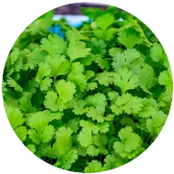
CilantroPlant seeds in the ground- Plant Apr 1 – May 20
- Again for fall Aug 13–27
- ParsleyPlant seeds or young plants
- Indoors Feb 18 – Mar 4
- Plant Apr 15 – Jun 3
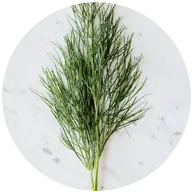
DillPlant seeds in the ground- Plant Apr 15 – Jun 17
- ChivesPlant seeds or young plants
- Indoors Feb 18 – Mar 4
- Plant Apr 15 – Jun 10
- MintPlant young plants
- Plant Apr 15 – Jun 10
- RosemaryPlant young plants
- Plant Apr 15 – Jun 3
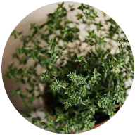
ThymePlant young plants- Plant Apr 15 – Jun 10
- OreganoPlant young plants
- Plant Apr 15 – Jun 10
- LavenderPlant young plants
- Plant Apr 15 – Jun 10
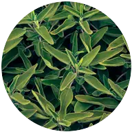
SagePlant young plants- Plant Apr 15 – Jun 10
- Lemon balmPlant young plants
- Plant Apr 15 – Jun 10
- TarragonPlant young plants
- Plant Apr 15 – Jun 10
Berries 10 plants
- StrawberriesPlant young plants
- Plant Apr 15 – May 27
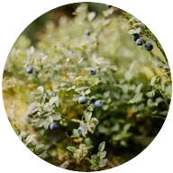
BlueberriesPlant potted or bare-root bushes- Plant Apr 15 – Jun 3
- RaspberriesPlant bare-root canes
- Plant Apr 15 – May 27
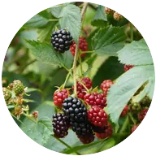
BlackberriesPlant bare-root or potted canes- Plant Apr 1 – May 20
- GrapesPlant bare-root or potted vines
- Plant Apr 1 – May 27
- Hardy kiwiPlant potted vines
- Plant Apr 15 – Jun 3
- HoneyberriesPlant potted bushes
- Plant Apr 1 – May 27
- CurrantsPlant bare-root or potted bushes
- Plant Apr 1 – May 27
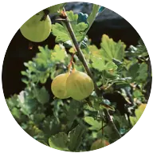
GooseberriesPlant bare-root or potted bushes- Plant Apr 1 – May 27
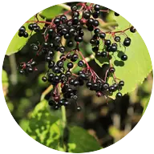
ElderberriesPlant bare-root or potted shrubs- Plant Apr 1 – May 27
Perennial vegetables 5 plants
- AsparagusPlant dormant crowns
- Plant Apr 15 – May 27
- RhubarbPlant dormant crowns
- Plant Apr 1 – May 13
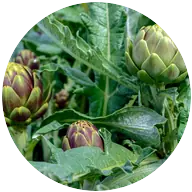
ArtichokesPlant young plants (starts)- Plant Apr 15 – May 27
- SorrelPlant seeds or young plants
- Plant Apr 1 – May 27
- HorseradishPlant root cuttings
- Plant Apr 1 – May 13
Fruit and nut trees 11 plants
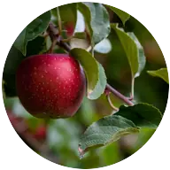
Apple treesPlant bare-root or potted trees- Plant Apr 1 – May 27
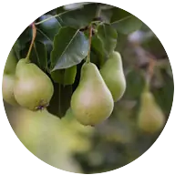
Pear treesPlant bare-root or potted trees- Plant Apr 1 – May 27
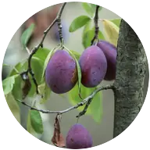
Plum treesPlant bare-root or potted trees- Plant Apr 1 – May 27
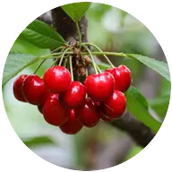
Cherry treesPlant bare-root or potted trees- Plant Apr 1 – May 27
- Fig treesPlant potted trees
- Plant Apr 15 – Jun 10
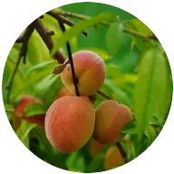
Peach treesPlant bare-root or potted trees- Plant Apr 1 – May 27
- Hazelnut treesPlant bare-root or potted trees
- Plant Apr 1 – May 27
- Persimmon treesPlant bare-root or potted trees
- Plant Apr 1 – May 27
- Asian pear treesPlant bare-root or potted trees
- Plant Apr 1 – May 27
- Quince treesPlant bare-root or potted trees
- Plant Apr 1 – May 27
- Mulberry treesPlant bare-root or potted trees
- Plant Apr 1 – May 27
Native plants 15 plants
- HuckleberriesPlant potted shrubs
- Plant Apr 1 – May 27
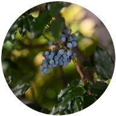
Oregon grapePlant potted shrubs- Plant Apr 1 – May 27
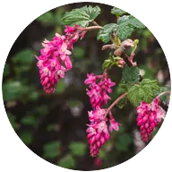
Red-flowering currantPlant potted shrubs- Plant Apr 1 – May 27
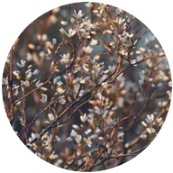
ServiceberryPlant bare-root or potted shrubs- Plant Apr 1 – May 27
- CamasPlant bulbs
- Fall Sep 25 – Oct 31
- ThimbleberryPlant bare-root or potted plants
- Plant Apr 1 – May 27
- SalmonberryPlant bare-root or potted shrubs
- Plant Apr 1 – May 27
- SalalPlant potted shrubs
- Plant Apr 1 – May 27
- KinnikinnickPlant potted plants
- Plant Apr 1 – May 27
- Western columbinePlant potted plants or seeds
- Plant Apr 1 – May 27
- Douglas asterPlant potted plants
- Plant Apr 1 – May 27
- Oregon sunshinePlant potted plants or seeds
- Plant Apr 1 – May 27
- Pacific ninebarkPlant bare-root or potted shrubs
- Plant Apr 1 – May 27
- Sword fernPlant potted plants
- Plant Apr 1 – May 27
- Oregon irisPlant potted plants or divisions
- Plant Apr 1 – May 27
Flowers 13 plants
- DahliasPlant tubers
- Plant May 20 – Jun 17
Frost possible until about May 26: keep frost cover handy.
- SunflowersPlant seeds in the ground
- Plant May 15 – Jun 26
Frost possible until about May 26: keep frost cover handy.
- Sweet peasPlant seeds in the ground
- Plant Apr 1 – May 6
- TulipsPlant bulbs
- Fall Sep 25 – Oct 31
- DaffodilsPlant bulbs
- Fall Sep 25 – Oct 31
- ZinniasPlant seeds in the ground
- Plant May 15 – Jun 26
Frost possible until about May 26: keep frost cover handy.
- PeoniesPlant bare-root divisions
- Fall Sep 25 – Oct 31
- CosmosPlant seeds or young plants
- Indoors Apr 3–17
- Plant May 15 – Jun 26
Frost possible until about May 26: keep frost cover handy.
- NasturtiumsPlant seeds in the ground
- Plant May 15 – Jun 26
Frost possible until about May 26: keep frost cover handy.
- MarigoldsPlant seeds or young plants
- Indoors Apr 8–22
- Plant May 20 – Jun 24
Frost possible until about May 26: keep frost cover handy.
- CalendulaPlant seeds in the ground
- Plant Apr 15 – Jun 3
- Again for fall Jul 23 – Aug 6
- RanunculusPlant soaked corms
- Plant Apr 15 – May 20
- SnapdragonsPlant seeds or young plants
- Indoors Feb 4–18
- Plant Apr 15 – May 27
- Start seeds indoors
- Plant in the garden
- Plant again for fall
- Today
- Frost possible
- Frost likely
New to this? Read the beginner's guide or look up a term in the glossary.
ZIP codes that use these dates: 97850, 97827, 97883. Look up another ZIP.
Where these dates come from
The frost dates for La Grande come from the NOAA weather station in La Grande, at 2,760 feet. It's the closest weather station to La Grande with NOAA's 1991–2020 frost records. It's a NOAA cooperative station, not an airport station.
They're NOAA's 1991–2020 climate normals: 30-year averages, not a forecast. How we pick each town's station.
Common questions about frost in La Grande
When is the last frost in La Grande?
May 6 in a typical year. Frost is over by May 26 in 9 years out of 10, Tender plants like tomatoes wait longer than that, for warm soil: see the tomato question below.
When is the first frost in La Grande?
Around October 1. It comes as early as September 17 in 1 year out of 10.
When can I plant tomatoes in La Grande?
Set out tomato plants May 20 – Jun 17, after starting seeds indoors Mar 25 – Apr 8. Keep frost cover handy until about May 26.
When should I plant garlic in La Grande?
Plant garlic cloves Sep 25 – Oct 31, and harvest next summer when the lower leaves turn brown.
How long is the growing season in La Grande?
About 148 frost-free days, shorter than most of the 86 Oregon, Washington and Idaho towns we cover.